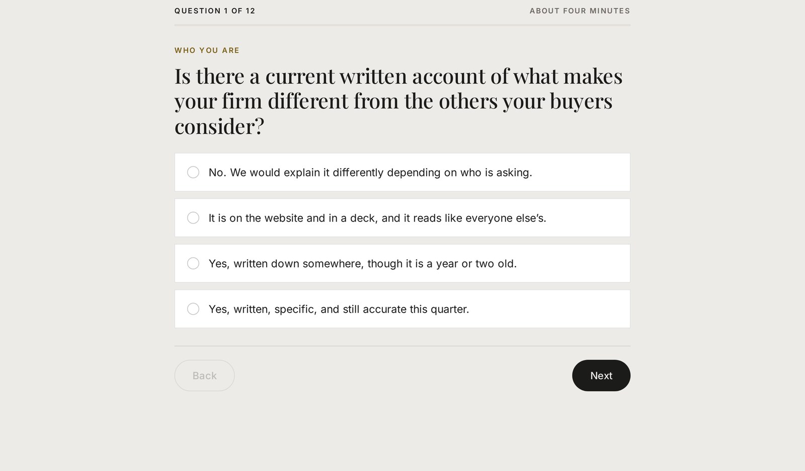

You ask a real business question and get a polished answer that could belong to anyone.
You’ve already used AI. Why did your results suck?
No commitments. No setup fee.
The gap
74%
of organizations still hope AI will grow revenue.
Only 20% are actually seeing it.
Deloitte, State of AI in the Enterprise, 2026. Survey of 3,235 leaders across 24 countries.
The gap, drawn
Hoping versus actually doing it.
20% actually growing revenue with AI
80% still hoping, still waiting
Where we sit
We enhance other models. We don’t compete with them. Simple Genius is the first step in implementing AI in a business.
Simple Genius
AI cannot know your business. Nobody gave it the record.
Recognition
Is this you?…
You bought tools that made noise for a week, then became another tab nobody opens.
You handed someone the AI problem and got a prompt library, a meeting, and no operating answer.
It gets a fact about your own company wrong, then says it like it was in the room.
You did not fail at AI. You started at the wrong end.
The real cause
AI cannot know your business. Nobody gave it the record.
What a decision needs is in your people’s heads: the exception someone always makes, the reason a step exists, the client who must be handled a particular way. A general model receives none of that unless you put it in the record.
Today
A model asked to guess.
After the first step
A model working from your record.
The right order
Record first. Then the tools.
Context
Your company’s written operating record: what happens, why, who owns it, and where the exceptions live.
A thinking partner
A model that reasons against your record, not the public web. It answers with the reasoning your firm actually uses.
A worker
Tools can finally produce work that sounds like your firm, not a generic version of one.
You were sold the worker before anyone built the record.
Start here
See your AI readiness in twelve questions.
About four minutes. You get a score out of forty eight, your three weakest answers, and a written assessment in your inbox.

How it runs
Four steps, in order.
See it on your business
Twelve questions about how your firm actually runs. You see your score before you give us anything.

Load your business in
Business Intake gathers the operating detail your firm decides to document, across six areas.

Confirm what's true
Business Brain holds the record you read, correct, and approve before it becomes the company version.

Run every decision against it
Strategic Insights and Strategic Initiatives show what the approved record suggests next. You still decide.

Grounds for believing us
How we found the first step.
This is the system we needed, so we built it.
Two operators who got tired of watching good companies get sold software that doesn’t move the needle.
Trent spent years working in employee benefits and insurance compliance, watching the same gap resurface again and again, then taught himself to build the fix.
Mark spent his career in financial services and employee benefits, where a number has to be defensible and a wrong answer is not an option.
 Trent Hiott
Trent Hiott
 Mark Combs, CFA
Mark Combs, CFA
Our commitments
What we hold ourselves to.
Month to month
No commitments, no setup fee. Leave any time.
You own your data
Export it any time. It never trains anyone else's models.
Nothing becomes truth until you approve it
Every finding arrives sourced and waits on you.
We interview your whole team
The record holds what your people know, not just leadership.
The difference
With and without Simple Genius.
The difference between clarity and uncertainty.
-
Before Simple GeniusGeneric AI slop.
After Simple GeniusAnswers rooted in your business.
-
Before Simple GeniusDecisions on gut instinct.
After Simple GeniusDecisions backed by data.
-
Before Simple GeniusCompetitors moving unwatched.
After Simple GeniusCompetitors watched in daylight.
-
Before Simple GeniusCompany data leaking into public models.
After Simple GeniusAI in a private, protected environment.
-
Before Simple GeniusSaying “we use AI” but nothing moves.
After Simple GeniusAI that actually moves the needle.
Pricing
One product. One honest price.
$399 per month includes 5 seats. Add seats when the people who need the record need access.
The written operating record your firm needs before AI can give you an answer worth trusting.
5 seats included
$75 per seat per month above 5
All six modules, no gated tier
The first step
Every decision your business makes has your whole business behind it.
Not a tool that makes things, a record of your business that stays true, and is in the room for every decision.
$399 per month includes 5 seats. No contract, no term, no setup fee. Cancel or downgrade any month.